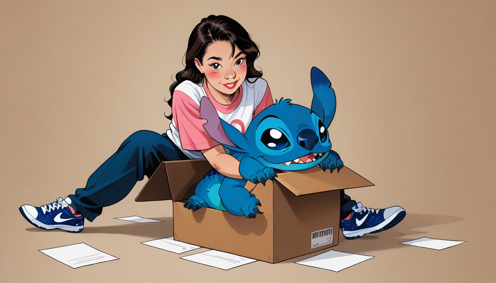

여기서 주의해라, 브로. 스니커즈 커스텀 작가로서 봤을 때 오리지널 박스가 찢어지거나 훼손되면 리셀가는 단번에 40% 폭락한다. 사람들은 신발 자체만 보면 된다며 하지만, 박스야말로 가치 평가의 50%를 차지하는 핵심 자산이다. 내가 직접 작업하며 배운 바로는 박스 상태가 실수 하나를 범하지 못하게 하는 가장 확실한 안전장치가 되어준다.
2003 년판과 2021 년 레트로판의 스티치 밀도 차이는 단순히 숫자 차이가 아니라 제조 공정의 변화다. 초기 모델은 수동 가위가 더 많이 사용되어 실밥이 불규칙하지만, 현재 판은 기계 자동화로 인해 밀도가 훨씬 균일하다. 박스지 재질 역시 2003 년 버전은 코팅 처리가 덜 되어 오래되면 변색되지만, 2021 년은 내구성을 위해 강화된 종이로 제작된 경우가 많다. 이런 미세한 디테일이 검색 시 '오리지널 인증'의 핵심 근거가 된다.
마포나 홍대 인근 럭셔리 가라오케 예약처럼 고급스러운 자리를 고를 때도 이 같은 포장 논리가 적용된다. 공간의 완성도는 내부뿐만 아니라 외부의 인상, 즉 '예약 확인서'나 '접대 물품'의 퀄리티에서 드러난다. 구글 서치 트렌드를 확인할 때 `https://support.google.com/` 에서 제공되는 데이터처럼 검색 용량이 제한된 키워드도 중요하다. 예를 들어, 한정판 스니커즈 보관 시 슈트리 사용 같은 100 회 미만 검색어조차 정확히 파악하면 가치를 높일 수 있다.
마지막으로, 박스 관리만큼이나 서비스의 디테일을 평가하는 것이 중요하다. 노래방 역사에서 보면 고가 룸은 단순한 공간이 아니라 경험의 패키지가 된다. `https://ko.wikipedia.org/wiki/%EB%85%B8%EB%9E%98%EB%B0%A9` 에 기록된 것처럼 초기에는 단순 오락이었다면 지금은 브랜드 경험이 강조된다. 이때 마포 셔츠룸 대표 실장 견적 테이블을 참고하듯, 소모품보다 포장과 관리에 투자하는 것이 장기적으로 더 높은 수익률을 만든다. 결국 박스 하나에 담긴 논리가 당신의 가치를 결정한다.